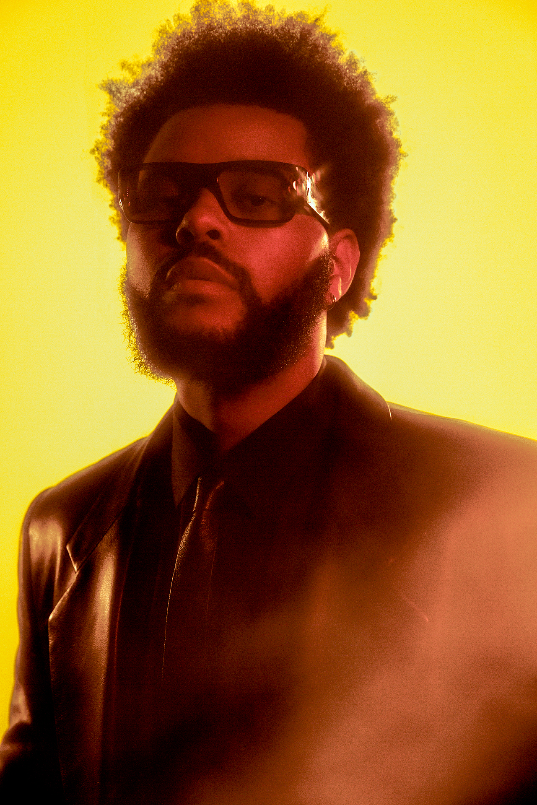

|  | BIOGRAFIA Abel Makkonen Tesfaye nació el 16 de febrero de 1990, en Scarborough, Toronto, Ontario. Es el único hijo1 de Makkonen y Samra Tesfaye, una pareja de emigrantes etíopes que llegaron a Canadá en los años 80. Fue criado en Scarborough, un barrio lleno de diversas culturas dentro de la ciudad. Durante su juventud, su madre trabajó en varios empleos para aportar al sustento de la familia, a menudo como enfermera y catering, mientras asistía a la escuela nocturna. Su padre más tarde abandonó a la familia, lo que llevó a su abuela materna a cuidar de él mientras era joven. Esto le permitió llegar a hablar de manera fluida el amhárico. También lo llevaba a sus "servicios" en una Iglesia Ortodoxa Etíope. Comenzó a fumar marihuana a los 11 años, y más tarde pasó a consumir drogas más fuertes. Describiendo su adolescencia como «una historia similar a la de KIDS, pero sin el sida», robó el supermercado local con su amigo de la escuela secundaria, y comenzó a usar MDMA, Xanax, cocaína, psilocibina y ketamina. Asistió al West Hill Collegiate Institute y Birchmount Park Collegiate Institute, pero no se graduó de ninguna de estas. Su nombre artístico se inspiró en su deserción escolar, adoptando el nombre The Weeknd después de que él y un amigo «dejaran la escuela un fin de semana y nunca regresaran», aunque el productor Jeremy Rose afirma que el nombre fue idea suya. La ortografía se modificó para evitar problemas de patente con la banda canadiense "The Weekend". |
| DISCOGRAFIA Álbumes de estudio: -Kiss Land (2013): Este álbum marcó el debut de The Weeknd en el mundo de la música. Incluye canciones como "Belong to the World" y "Live For". -Beauty Behind the Madness (2015): Este álbum fue un gran éxito comercial e incluye éxitos como "Can't Feel My Face", "The Hills" y "Earned It". -Starboy (2016): Otro gran éxito, este álbum incluye el sencillo principal "Starboy" (con Daft Punk), así como "I Feel It Coming" y "Reminder". -After Hours (2020): Este álbum recibió elogios de la crítica y fue un éxito comercial. Incluye canciones como "Blinding Lights", "Heartless" y "Save Your Tears". Mixtapes: -House of Balloons (2011): Este mixtape fue el primer proyecto de The Weeknd y lo ayudó a ganar reconocimiento en la industria musical. Incluye canciones como "High for This" y "Wicked Games". Thursday (2011): Segundo mixtape de The Weeknd, incluye canciones como "The Zone" y "The Birds Pt. 1". -Echoes of Silence (2011): Tercer mixtape de la trilogía inicial, incluye canciones como "D.D." (una versión de "Dirty Diana" de Michael Jackson) y "Montreal". EPs: -My Dear Melancholy, (2018): Este EP incluye canciones como "Call Out My Name" y "Try Me". Además de estos proyectos principales, The Weeknd ha lanzado numerosos sencillos y colaboraciones a lo largo de su carrera. Su música ha sido aclamada tanto por la crítica como por el público, y ha ganado varios premios y nominaciones, incluidos múltiples premios Grammy. |
|
| PREMIOS The Weeknd ha ganado 4 Premios Grammy, 20 Billboard Music Awards lo que lo convierte en el cuarto artista más premiado de estos premios, 6 American Music Awards, 9 Juno Awards, y ha sido nominado a 4 Latin Grammy ganando 2 incluyendo Álbum del Año por su trabajo con Rosalia en su álbum MotoMami y también ha sido nominado a un Óscar. |
|
| CANCIONES PRINCIPALES 1.-"Blinding Lights" 2.-"Starboy" (feat. Daft Punk) 3.-"The Hills" 4.-"Can't Feel My Face" 5.-"Save Your Tears" 6.-"Earned It" (de la banda sonora de Fifty Shades of Grey) 7.-"Heartless" 8.-"Call Out My Name" 9.-"In Your Eyes" 10.-"Pray for Me" (con Kendrick Lamar) 11.-"Often" 12.-"Wicked Games" 13.-"I Feel It Coming" (feat. Daft Punk) 14.-"High for This" 15.-"Die for You" 16.-"Love Me Harder" (con Ariana Grande) 17.-"False Alarm" 18.-"Reminder" 19.-"Lost in the Fire" (con Gesaffelstein) 20.-"Take My Breath" Estas son solo algunas de las canciones más destacadas de The Weeknd, pero su catálogo es extenso y tiene muchas otras canciones excelentes. Cada una de estas canciones ha contribuido al éxito y la reputación de The Weeknd como uno de los artistas más influyentes en la música contemporánea. |